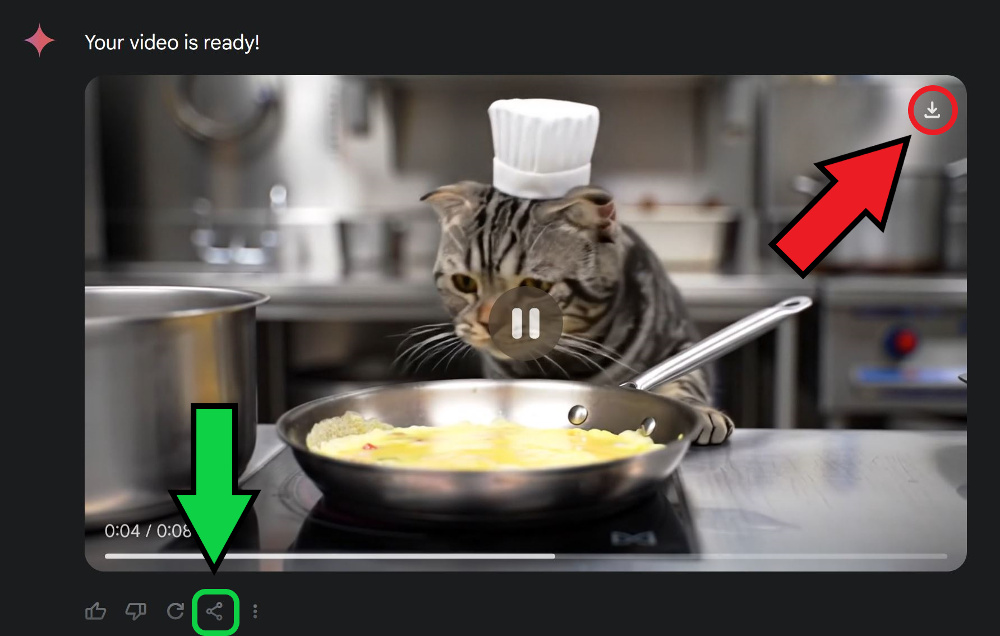
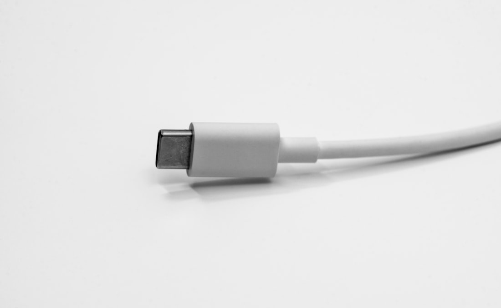

AI pentru Comunicare,
Marketing & Conținut
De la prompturi izolate la o mașinărie de marketing care sună a tine
Pe scurt, din sesiunea 1 — și de ce contează azi
3 lucruri pe care construim mai departe. Azi le punem la treabă direct pe marketingul tău.
Prompt bun = rezultat bun
Rol · Context · Sarcină · Format · Restricții.
„Scrie-mi un text" → generic. Cu structură → exact ce-ți trebuie.
Projects = memorie
Setezi contextul firmei o dată, AI-ul scrie informat de fiecare dată.
Azi îl umplem cu vocea brandului tău.
Context = al tău, nu generic
Aceeași întrebare, dar despre afacerea ta → un răspuns folosibil, nu „media internetului".
Ce acoperim azi — drumul unei lansări
Tot parcursul de marketing al unui produs, pe exemplul Viorica · crema cu cătină. Blocurile PRACTICĂ le faci live, pe afacerea ta.
- 1Mindset de growth pentru o lansare
- 2Cercetare → USP cu AI, în 4 pași PRACTICĂ
- 3Capcana „totul sună la fel"
- 4Vocea brandului (TOV) PRACTICĂ
- 5Projects + criticul AI PRACTICĂ
- 6Cele 3 forme de Claude · Skills & oferte
- 7Foto & unghiuri de produs · Buffer
- 8MCP & API · Excel & CRM → dashboards
- 9Landing + calculator (Lovable) PRACTICĂ
- 10Pachetul tău de conținut — KPI
Marketing clasic vs. Growth — și de ce te ajută pe tine
USP — de ce te-ar alege pe TINE, nu pe altul?
USP nu e un titlu de glorie intern — e promisiunea specifică care-l face pe client să te aleagă.
❌ Nu e USP (sună bine, dar nu vinde)
✅ USP care chiar diferențiază
Oferta ta — și un „avocat al diavolului" care-ți scoate diferențiatorul
Viorica lansează crema cu cătină. Întâi: ce oferim — și de ce ne-ar alege cineva.
Competitorii — pune un agent AI să-i studieze
Nu un chat care doar răspunde — un agent care le scanează site-ul, comunicarea, reclamele
…și vezi exact ce reclame rulează concurența — gratuit
facebook.com/ads/library
adstransparency.google.com
Vocea clientului — ce spun de fapt, în cuvintele lor
AI citește recenziile (ale tale + ale concurenței) și scoate tipare: ce laudă, ce reclamă, ce cuvinte repetă
Poziționare → USP-ul final, scos cu AI
Pui tot ce ai strâns într-un singur chat → AI propune 5–7 variante, tu alegi una
Toți folosesc AI → totul sună la fel. Cum ieși din capcană.
⚠️ Capcana AI (AI slop) — o recunoști deja
✅ SOLUȚIILE — cum ieși
Ce este „Tone of Voice" (TOV) — arma ta anti-AI-slop
TOV = personalitatea brandului tău în cuvinte: cum suni, ce cuvinte folosești, cum te adresezi.
Cum „citești" vocea unui brand — exemplu Banca Transilvania
Analizează și extrage:
1. 5 adjective ale vocii (cald, sigur pe el…)
2. Vocabularul tipic — cuvinte și expresii folosite des
3. Ce EVITĂ (cuvinte, ton, subiecte)
4. Ritmul și structura frazelor
5. Cum se adresează clientului (tu/dvs., apropiat/formal)
6. 3 fraze-șablon „semnătură"
La final, scrie un „Ghid de voce" de o pagină, cu exemple Așa DA / Așa NU.
(bancatransilvania.ro + Facebook/BancaTransilvania)
Practică: Pune AI-ul să-ți descopere vocea
Faci pe brandul tău ce am demonstrat pe Banca Transilvania
(demo live pe Viorica sau brandul tău)
Ce este un „Project" și cum îți ține brandul la un loc
Un spațiu de lucru cu memorie: încarci o dată contextul brandului → fiecare conversație îl știe deja
🧠 Memorie persistentă
Nu reexplici cine ești la fiecare chat. Documentele de brand stau în Project, mereu „la îndemâna" AI-ului.
🎙️ Tot ce iese e on-brand
Cu „04 Brand voice" înăuntru, orice text iese în vocea ta — nu generic.
👥 Împărtășit cu echipa
Toți scriu din același Project → consecvență, chiar dacă scriu oameni diferiți.

Practică: Un Project care scrie mereu în vocea ta
Transformi documentele de brand într-un Project → fiecare output e on-brand. Exemplu: Viorica Cosmetics Viorica

Construiește-ți un „critic" care-ți distruge campania înainte s-o vadă piața
💬 Campania ta (înainte de lansare)
🔥 Roast-ul AI — ce prinde
Același Claude, 3 forme — alegi după cât vrei să facă singur
De la „tu întrebi, el răspunde" → la „îi dai un obiectiv și lucrează singur". Același model; diferă unde lucrează și cât control îi dai.
Claude (chat)
Tu întrebi, el răspunde. Conversezi, scrii, analizezi documente — tu conduci fiecare pas.
claude.ai · app · add-in Office
Claude Cowork NOU · 2026
Îi dai un obiectiv, lucrează pe fișierele tale. Citește, editează, creează fișiere — sarcini multi-pas, livrează rezultatul gata.
aplicație desktop
Claude Code
Construiește și automatizează. Agent în terminal: scrie cod, automatizează procese, se conectează la orice. Cel mai puternic.
terminal
Claude (chat) — asistentul de zi cu zi
Cel mai rapid mod de a folosi AI: întrebi în limbaj natural, primești răspuns. Tu conduci, pas cu pas.
Claude Cowork — lucrează pe computerul tău, singur NOU · 2026
Îi dai un obiectiv și un folder → citește, editează și creează fișiere, livrează rezultatul gata. Nu doar îți spune cum — face.
Claude Code — cel mai puternic, pentru automatizări și tehnic
Agent care rulează în terminal: construiește aplicații, automatizează procese și se conectează la uneltele tale prin MCP. Production-ready.
Claude Skills — superputeri reutilizabile pentru AI
Un „pachet" de instrucțiuni + șabloane pe care Claude le încarcă automat, doar când e relevant
Documente native
Generează Word, PDF, Excel, prezentări .pptx — fișiere complete, nu doar text. O ofertă, un raport, un deck întreg.
Procesul tău
Skill-ul știe grila ta de prețuri, structura, vocea brandului. Nu mai reexplici de fiecare dată — e deja acolo.
Reutilizabil & consistent
Același rezultat de calitate, de fiecare dată. Un skill merge în Claude, Cursor, Codex, Gemini CLI — standard deschis.
SKILL.md — instrucțiuni, șabloane, scripturi. Claude îl activează automat, doar când e relevant (progressive disclosure). Nu trebuie să-i explici de fiecare dată.O ofertă personalizată pentru fiecare client — generată ca fișier
Exemplu fir-roșu B2B: un ☕ business de cafea care vinde abonamente pentru birouri
Fotografii de produs fără studio — și cum scrii promptul
Generezi și editezi imagini profesionale conversațional — exemplu Viorica [PROMPT P09]

(Nano Banana / ChatGPT)
Nu reels complete — ci unghiuri & mockup-uri care îți susțin filmările
🎥 Tu filmezi (autentic)
Conținutul 100% AI sună la fel (slide 11). Tu ești diferențiatorul.
🤖 AI completează


Programezi o dată, postezi peste tot
Programezi pe toate rețelele, dintr-un loc
Facebook · Instagram · TikTok · LinkedIn · YouTube Shorts · Threads · Pinterest · X. Faci coada de postări pe 2 săptămâni într-o singură ședință.
Calendar + Analytics
Vezi tot calendarul dintr-o privire și măsori ce a mers: la ce oră, pe ce rețea. Repeți ce funcționează, oprești ce nu.
MCP — „USB-C pentru AI"
Înainte de USB-C: fiecare aparat, alt cablu. MCP = portul universal prin care orice AI se conectează la aplicațiile tale.
❌ Fără MCP — AI izolat
Cauți tu în foaia de calcul, copiezi datele
Reexplici contextul la fiecare conversație
✅ Cu MCP — AI acționează în uneltele tale

creator MCP
Practică: Claude care lucrează în uneltele tale
Conectezi Claude la Google Drive + Google Sheets — demo live [PROMPT P11]
(captură implementarea trainerului)
Claude, nativ în Excel — vorbești cu foaia de calcul
Întrebi, nu construiești formule. Un panou lateral chiar în Excel [PROMPT P12]
(captură de pe internet / din contul tău)
Un Excel nou, gata făcut — MiniMax Agent
Când vrei rapid, fără add-in — îi dai date brute, îți dă analiza
(captură de pe internet)
Ce este un API — cum „vorbesc" aplicațiile între ele
Nu trebuie să programezi nimic. Dar înțelegi cum se conectează uneltele tale — și de ce CRM-ul poate „vorbi" cu reclamele.
Ce poți face când aplicațiile tale „vorbesc" între ele
Fără copy-paste, fără muncă manuală. Datele curg singure dintr-o aplicație în alta — automat.
🎯 Lead → CRM, automat
Cineva completează un formular pe Facebook → intră direct în CRM. Zero copy-paste, niciun lead pierdut.
🧾 Comandă → factură + SMS
Comandă în magazinul online → se face factura și pleacă un SMS de confirmare, fără să atingi nimic.
📅 Programare → calendar + reminder
Clientul rezervă pe site → apare în calendar + îi pleacă un reminder pe email. Mai puține neprezentări.
🤖 AI → datele tale reale
AI-ul citește datele direct din uneltele tale (prin API/MCP) → răspunde pe cifrele tale, nu generic.
Conectează CRM-ul cu reclamele → dashboard automat
Exemplu: Kommo CRM legat de Facebook Ads → vezi ce reclamă aduce vânzări, nu doar click-uri
— îl pui tu (captură reală)
O pagină dedicată pentru o lansare — fără cod, cu Lovable
Exemplu Viorica: lansezi o cremă nouă pe o pagină separată, n-o îneci în site-ul mare
(captură de pe internet / demo trainer)
foto produs în hero → assets/products/viorica-crema-maini.png
Un calculator care-ți aduce lead-uri B2B calificate
Exemplu ☕ business de cafea: biroul calculează singur de câtă cafea are nevoie — și cât costă [P13]
Practică: Landing page-ul tău, live
Fiecare generează un landing real pentru un produs / campanie / serviciu nou [PROMPT P13]
(demo live al trainerului)
Acum legăm totul: pachetul tău de conținut on-brand
Folosești Project-ul (slide 16) și produci un mini-pachet complet [PROMPT P14]
1 secvență de 3 postări cu unghiuri diferite, adaptabile pe Instagram/Facebook/LinkedIn
1 email/ofertă scurtă către un tip de client
Ce duci acasă azi
Perplexity · ChatGPT web · NotebookLM · Deep Research avansat